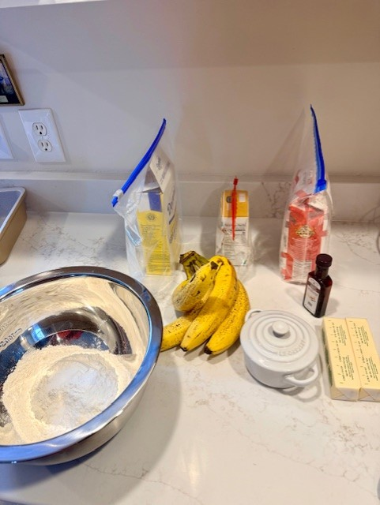
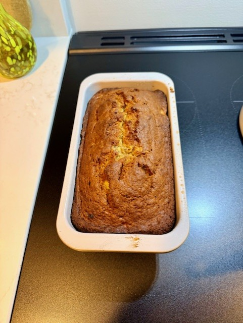

Some recipes arrive fully formed. Others take a while to become themselves. Rick's banana bread belongs firmly in the second category.
It started with a search for something better. Rick worked his way through an assortment of banana bread recipes he found by Googling—recipes from well-known cooks and food personalities, including Bobby Flay. There were plenty of good ideas, but none quite landed where he wanted them to.
So he started changing things.
Over the years, the recipe became an amalgamation of ideas from different versions, combined with the lessons that only repeated baking can teach. Something would work in one loaf and not another. A technique would improve the texture. Another adjustment would bring the banana flavor forward. Eventually, trial and error began turning into a recipe of its own.
Four Bananas, Two Treatments
One of the things that makes this loaf different is what happens to the bananas.
Two are mashed with a fork and left deliberately chunky. The other two are whipped with sugar until they become light and almost mousse-like.
The distinction is intentional. The chunky bananas bring pieces of banana and texture to the finished loaf, while the whipped bananas help create the soft, substantial crumb Rick was after.
Four bananas may sound like a lot until you taste the result. This is meant to be banana bread that actually tastes like bananas.
Why "No Nuts"?
The quotation marks matter.
"No Nuts" is not a declaration about what banana bread is supposed to contain, and it isn't a dietary manifesto. We tried the bread both ways and simply preferred it without them.
Nuts have their place, of course. But in this particular loaf, they can compete with the banana flavor. Without them, the banana stays at the center of the conversation.
So "No Nuts" became less a rule than a preference: more banana, fewer distractions.
A Little Banana Bread History
Banana bread has a surprisingly modern history. As bananas became more available in the United States through improvements in transportation and refrigeration, they became increasingly common in American kitchens. By the 1930s, two things came together to help banana bread become a familiar household staple: Depression-era cooks were particularly reluctant to waste overripe food, and the widespread use of baking soda and baking powder made quick breads easier to make at home.
Overripe bananas had found one of their most useful second lives—mixed into a batter and baked into something warm, fragrant, and considerably more appealing than the fruit sitting on the counter might suggest.
That basic idea has endured. What changes from kitchen to kitchen is the personality of the loaf.
We Had Found Ours
After enough batches, there was no longer much reason to keep looking for another banana bread recipe.
This was the one.
It had the moisture Rick was after, enough structure to make a substantial slice, and a pronounced banana flavor without needing a long list of ingredients or elaborate techniques. More importantly, it was repeatable. It worked.
And once a recipe reaches that point in a household, it tends to acquire a name.
Rick's "No Nuts" Banana Bread became the banana bread.

Ready to make the loaf yourself?
→ Get Rick's "No Nuts" Banana Bread Recipe